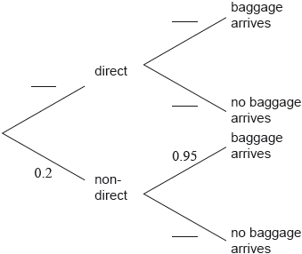

Sara regularly flies from Geneva to London. She takes either a direct flight or a non-directflight that goes via Amsterdam.
If she takes a direct flight, the probability that her baggage does not arrive in London is 0.01.
If she takes a non-direct flight the probability that her baggage arrives in London is 0.95.
The probability that she takes a non-direct flight is 0.2.

Complete the tree diagram.
Find the probability that Sara’s baggage arrives in London.